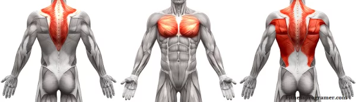

HOW TO DO:

A dumbbell pullover is a strength training exercise that targets the muscles of the upper body, including the chest, back and shoulders. It involves lying down on a flat or slightly inclined bench and holding a dumbbell with both hands above your chest.
- Position your upper back on the bench. Your feet should be flat on the floor, and your knees bent at a 90-degree angle.
- Hold a dumbbell with both hands, with your palms facing upward and your arms extended over your chest.
- Slowly lower the dumbbell back behind your head while keeping your arms straight and your core engaged. You should feel a stretch in your chest and lats as you lower the weight.
- Pause for a second when the weight is just above your head, then slowly raise the weight back up to the starting position. Make sure to keep your arms straight and avoid bending your elbows.
- Repeat for the desired number of repetitions.
It’s important to maintain good form throughout the exercise to avoid injury and get the most out of the movement. If you want to target the chest, then you will need to keep your arms as straight as possible, and your elbows in tight.
BENEFITS
Targets Multiple Muscles: Dumbbell pullover is one of the rare exercises that trains both the front and back of the body at the same time. The main purpose of this exercise is to work the chest and back muscles, in order to strengthen them, and help you gain muscle mass. By engaging multiple muscle groups at once, you can increase your overall strength and muscle mass.
Increases Chest Size: The dumbbell pullover is a great exercise for building a bigger chest. By stretching the chest muscles during the movement, you can activate more muscle fibers and stimulate muscle growth. (Learn how to do a chest workout for mass)
Better Posture and Mobility: Dumbbell pullover is considered a postural exercise by sports physiologists and researchers. The dumbbell pullover can also help to improve shoulder mobility by stretching the chest and lats. This can help to improve your posture and reduce the risk of shoulder injuries.
MUSCLES WORKED
- Back
- Biceps